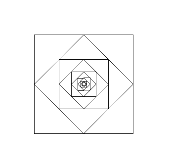
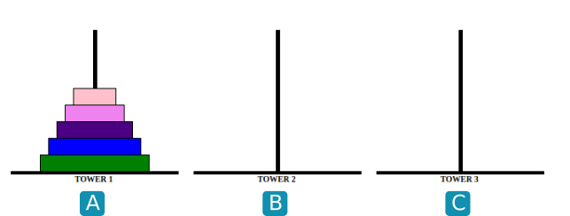
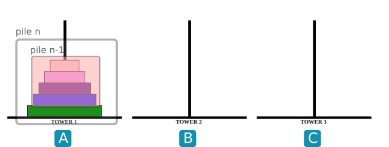
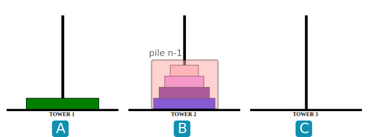
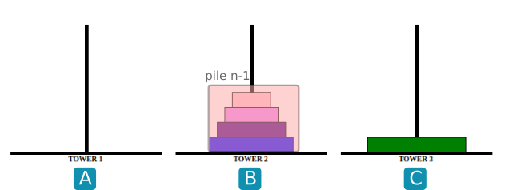
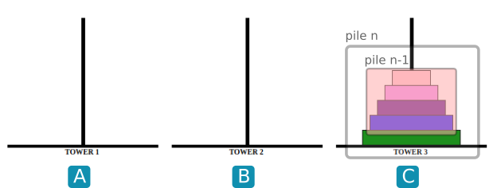
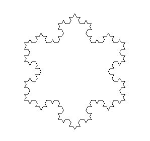
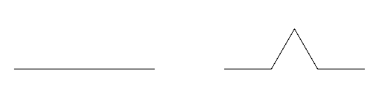
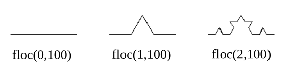
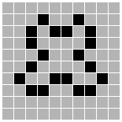

Exercices⚓︎
Exercice 1
Écrire une fonction récursive puissance(x,n) qui calcule le nombre \(x^n\).
1 2 3 4 5 | |
Exercice 2 
On rappelle que le PGCD (plus grand diviseur commun de deux nombres) vérifie la propriété suivante : si la division euclidienne de \(a\) par \(b\) s'écrit \(a = b \times q + r\), alors \(pgcd(a,b)=pgcd(b,r)\).
Cette propriété est à la base de l'algorithme d'Euclide
Exemple : \(pgcd(24,18)=pgcd(18,6)=pgcd(6,0)\), donc \(pgcd(24,18)=6\)
Écrire un algorithme récursif pgcd(a,b).
1 2 3 4 5 | |
Exercice 3
La conjecture de Syracuse (ou de Collatz) postule ceci :
Prenons un nombre \(n\) : si \(n\) est pair, on le divise par 2, sinon on le multiplie par 3 puis on ajoute 1. On recommence cette opération tant que possible. Au bout d'un certain temps, on finira toujours par tomber sur le nombre 1.
- Proposer un programme récursif
syracuse(n)écrivant tous les termes de la suite de Syracuse, s'arrêtant (on l'espère) à la valeur 1. - On appelle «temps de vol» le nombre d'étapes nécessaires avant de retomber sur 1. Modifier la fonction précédente afin qu'elle affiche le temps de vol pour tout nombre
n.
1.
1 2 3 4 5 6 7 8 | |
1 2 3 4 5 6 7 8 9 10 | |
Exercice 4
Reproduire le dessin suivant, à l'aide du module turtle.
turtle est un hommage au langage LOGO inventé par Seymour Papert au MIT à la fin des années 60.

1 2 3 4 5 6 7 8 9 10 11 12 13 14 15 16 17 18 19 20 | |
Exercice 5
Proposer une nouvelle fonction récursive puissance_mod(x,n) qui calcule le nombre \(x^n\). Pour optimiser la fonction déjà construite à l'exercice 1, utiliser le fait que :
- si \(n\) est pair, \(a^n=(a \times a)^{n/2}\)
- sinon \(a^n=a \times (a \times a)^{(n-1)/2}\)
1 2 3 4 5 6 7 8 | |
Exercice 6
Écrire un algorithme récursif recherche(lst,m) qui recherche la présence de la valeur m dans une liste triée (par ordre croissant) lst.
Cette fonction doit renvoyer un booléen.
Aide :
Les techniques de slicing (hors-programme) permettent de couper une liste en deux :
>>> lst = [10, 12, 15, 17, 18, 20, 22]
>>> lst[:3]
[10, 12, 15]
>>> lst[3:]
[17, 18, 20, 22]
1 2 3 4 5 6 7 8 9 10 11 12 13 | |
Exercice 7
On considère le jeu des Tours de Hanoï. Le but est de faire passer toutes les assiettes de A vers C, sachant qu'une assiette ne peut être déposée que sur une assiette de diamètre inférieur.

Une version jouable en ligne peut être trouvée ici.
- S'entraîner et essayer d'établir une stratégie de victoire.
- Observer les images ci-dessous :




Écrire une fonction récursive hanoi(n, A, B, C) qui donnera la suite d'instructions (sous la forme " A vers C") pour faire passer une pile de taille n de A vers C en prenant B comme intermédiaire.
1 2 3 4 5 6 7 8 9 10 11 12 13 14 | |
Exercice 8
Cet exercice a pour objectif le tracé du flocon de Von Koch.

L'idée est de répéter de manière récursive la transformation ci-dessous : chaque segment de longueur l donne naissance à 4 segments de longueur l/3, en construisant une pointe de triangle équilatéral sur le deuxième tiers du segment.

1) Créer une fonction récursive floc(n,l) qui trace à une «profondeur» n un segment de longueur l.

Indications- l'instruction de tracé n'a lieu que quand
nvaut 0. - l'étape
nfait 4 appels sucessifs à l'étapen-1.
2) Créer une fonction triangle(n,l) qui trace le flocon complet.
1 2 3 4 5 6 7 8 9 10 11 12 13 14 15 16 17 18 19 20 21 22 23 | |
Exercice 9
Exercice de diffusion récursive sur Capytale à retrouver ici

Bibliographie
- Numérique et Sciences Informatiques, Terminale, T. BALABONSKI, S. CONCHON, J.-C. FILLIATRE, K. NGUYEN, éditions ELLIPSES.
- Prépabac NSI, Terminale, G.CONNAN, V.PETROV, G.ROZSAVOLGYI, L.SIGNAC, éditions HATIER.